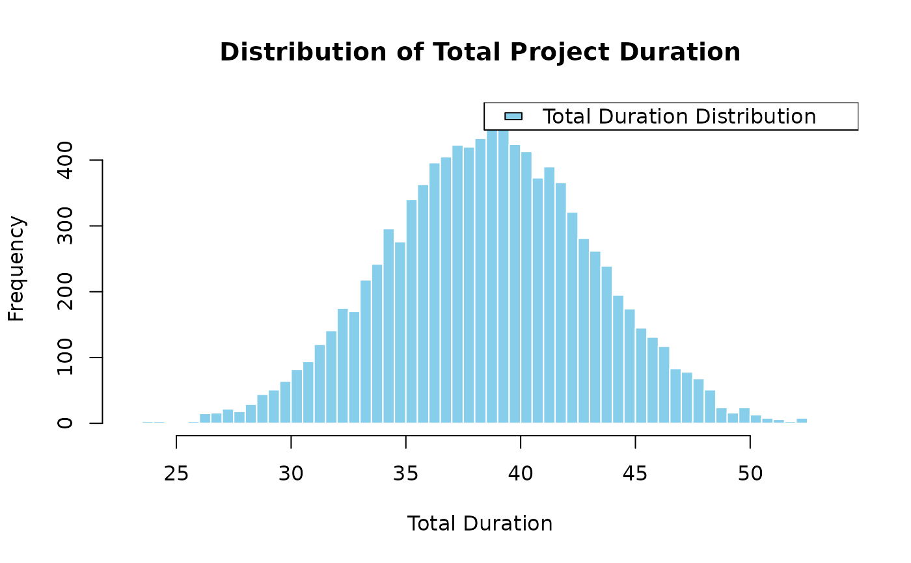

Monte Carlo Simulation.
Arguments
- num_sims
The number of simulations.
- task_dists
A list of lists describing each task distribution.
- cor_mat
The correlation matrix for the tasks.
Value
The function returns a list of the total mean, variance, standard deviation, and percentiles for the project.
Examples
num_sims <- 10000
task_dists <- list(
list(type = "normal", mean = 10, sd = 2), # Task A: Normal distribution
list(type = "triangular", a = 5, b = 10, c = 15), # Task B: Triangular distribution
list(type = "uniform", min = 8, max = 12) # Task C: Uniform distribution
)
cor_mat <- matrix(c(
1, 0.5, 0.3,
0.5, 1, 0.4,
0.3, 0.4, 1
), nrow = 3, byrow = TRUE)
results <- mcs(num_sims, task_dists, cor_mat)
cat("Mean Total Duration:", results$total_mean, "\n")
#> Mean Total Duration: 38.59957
cat("Variance of Total Variance:", results$total_variance, "\n")
#> Variance of Total Variance: 19.75448
cat("Standard Deviation of Total Duration:", results$total_sd, "\n")
#> Standard Deviation of Total Duration: 4.444601
cat("5th Percentile:", results$percentiles[1], "\n")
#> 5th Percentile: 31.39155
cat("Median (50th Percentile):", results$percentiles[2], "\n")
#> Median (50th Percentile): 38.57252
cat("95th Percentile:", results$percentiles[3], "\n")
#> 95th Percentile: 46.00927
hist(results$total_distribution, breaks = 50, main = "Distribution of Total Project Duration",
xlab = "Total Duration", col = "skyblue", border = "white")
